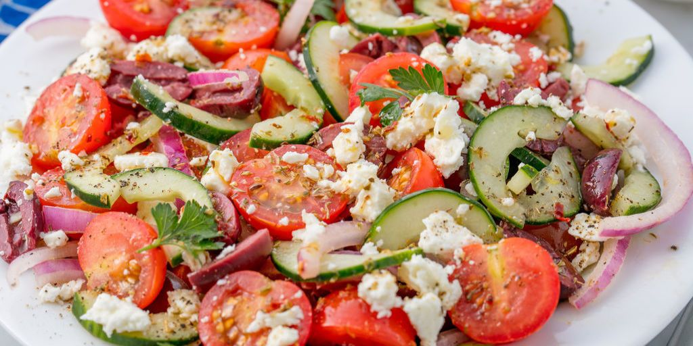

Greek Salad

Description
A traditional Greek salad consists of sliced cucumbers, tomatoes, green bell pepper, red onion, olives, and feta cheese. This classic combination is delicious, so I stick to it, just adding a handful of mint leaves for a fresh finishing touch.
Ingredients
- 1 hothouse cucumber, unpeeled, seeded, and sliced 1/4-inch thick
- 1 red bell pepper, large-diced
- 1 yellow bell pepper, large-diced
- 1 pint cherry or grape tomatoes, halved
- 1/2 red onion, sliced in half-rounds
- 1/2 pound feta cheese, 1/2-inch diced (not crumbled)
- 1/2 cup calamata olives, pitted
For the vinaigrette:
- 2 cloves garlic, minced
- 1 teaspoon dried oregano
- 1/2 teaspoon Dijon mustard
- 1/4 cup good red wine vinegar
- 1 teaspoon kosher salt
- 1/2 teaspoon freshly ground black pepper
- 1/2 cup good olive oil
Steps
-
Step 1:Place the cucumber, peppers, tomatoes and red onion in a large bowl.
-
Step 2: For the vinaigrette, whisk together the garlic, oregano, mustard, vinegar, salt and pepper in a small bowl. Still whisking, slowly add the olive oil to make an emulsion. Pour the vinaigrette over the vegetables. Add the feta and olives and toss lightly. Set aside for 30 minutes to allow the flavors to blend. Serve at room temperature.
Return to main page